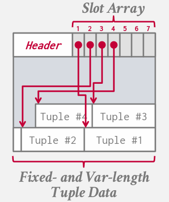
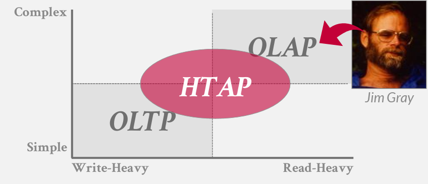
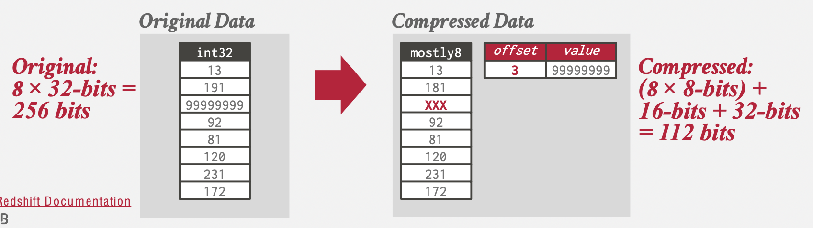
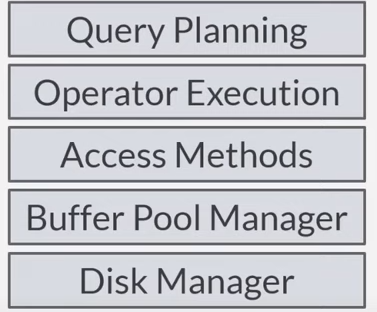
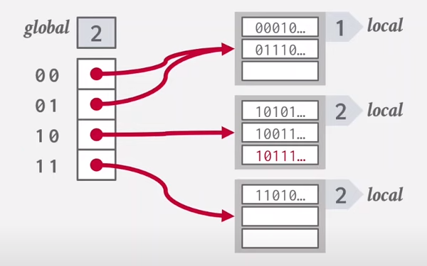
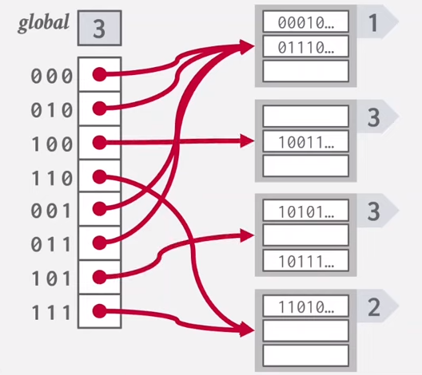
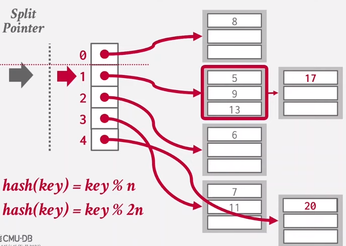
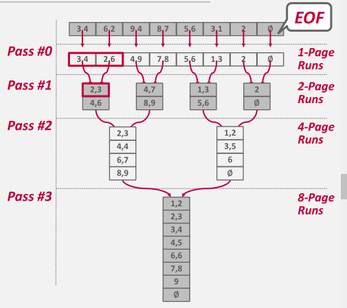
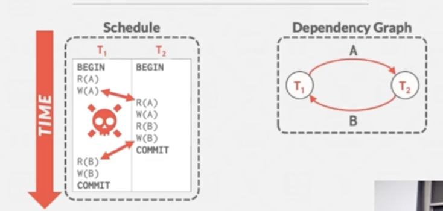

data model
关系，K/V，图等等
schema
entity和他们的attribute
relational algebra是procedure的
SQL
windows function为每一行计算一个新值？
可以用来得到行号，排名rank
mmap
让OS负责内存和外存的页交换
不建议
DBMS管理一系列的page作为存储单元
找到page的方法可以是链表或者目录式
heap
page中如何组织内容
1.tuple-oriented
strawman 谬误做法
定长记录在block中的组织方式
在删除时除了将最后的记录移过来填补空位这种做法，还可以保留一个file header，维护free list（空缺位置的链表）
以链表形式记录可用位置
slotted page
在块中组织变长记录

当需要修改时只需要维护slot array中的偏移
支持可变长
中间可能会有碎片
可以在postgres中简单测试检验这一行为
这种结构规定了（外部？）只能保存指向块头中的指针，而不能保存直接指向记录的指针（大概是因为tuple会移动）
Problem #1: Fragmentation
→ Pages are not fully utilized (unusable space, empty slots).
Problem #2: Useless Disk I/O
→ DBMS must fetch entire page to update one tuple.
Problem #3: Random Disk I/O
→ Worse case scenario when updating multiple tuples is
that each tuple is on a separate page.
What if the DBMS cannot overwrite data in
pages and could only create new pages?
2.log-structed 每个tuple有一个唯一标记 写操作时，只追加PUT或DEL到某个tuple的操作日志，不实际执行 读操作麻烦了 保留一个指向每个tuple最新的日志的索引（不一定存在最新日志） 可以压缩日志，压缩之后每个tuple的操作至多出现一次，存储到磁盘上的时候可以放弃时序信息，而是按他们的id排序，便于读取
压缩方法
universal 归并？
level 层级的？
有写放大问题
一次逻辑写变成很多次物理写
3.index-organized
tuple中如何组织内容
防止跨字读取 填充和重排序
现有数据库如何处理numeric
NULL标记 推荐方法 bitmap
大文件的存储
workload

NSM
DSM
一个block只存一个属性（column store）
PAX
row group
column chunk
在row group中column store
提高I/O效率
i/o是数据库瓶颈
通过压缩来提高IO效率
naive compression
使用通用压缩技术，同时意味着DBMS不能理解压缩后的数据
zstd
希望不用解压缩就能操作数据，将操作转换为等价的压缩后的表示
column level
可以混合使用多种策略
run-length encoding
RLE Triplet
value,offset,length
把相邻的相同value的值合并
排序后效果更好
bit packing
使用空间比声明所需的空间小（int32，但是数很小）
丢掉没有使用的位（转为int8）
mostly encoding
允许bit packing中出现一些确实使用了很多空间的值的特例
把他们设置为特殊值（即指示从字典查），单独用字典存储

bitmap encoding
对一个属性的每个取值，使用一个bit来对应
适合取值情况极少的
delta encoding
存储前缀和表
dictionary encoding
常用
希望字典的键（压缩表示）有和值（原值）一样的ordering来进行点查询和范围查询 保序
字典要支持压缩和解压
解压是常规的，从键得到值
压缩是为了让我们做到前面说的把操作转换为等价的压缩后表示
qwq
去哪里读入（空间局部性）
什么时候读入/写回
multiple bufferpool
减少锁争用，增加局部性
prefetch
不仅是最简单的sequential access可以，index（b+树）的访问也可以
scan sharing
合并扫描相同表的指针
continuous scan sharing
有一个一直循环扫描的指针
需要时跳上去
bypass
不在buffer pool中保存，只是临时自己使用内存page
LRU和CLOCK不记录频率，只记录了最近访问时间
sequential flooding
OLAP中，读过一次的page不会再被读，最近访问的是最适合evict的
一次顺序读取把LRU记录信息全部变成没有意义的东西的意思
LRU-K
可能还有个记录驱逐信息的cache
两个辅助优化
localization
query局部作判断
防止污染
priority hints
dirty page处理
backgrounding writing默默处理dirty page
OS和硬件有一些最大化disk bandwidth的机制会重排IO请求
但是他们不知道请求优先级（是background writing还是更重要的writing）(linux支持优先级设置？)
一样的，DBMS会绕过操作系统的IO使用direct io
fwrite不保证写入到文件，只保证进入了OS的cache
fsync可以保证
为什么fsync要设计成fail之后将dirty page设置为clean
（前提可能是认为fsync fail代表那个设备离开了）1个u盘被拔出了fsync失败，脏的页没必要继续为他继续保留

hash table
平均时间复杂度 O(1)
但是在DBMS中常数matter
hash function
如何映射
快速映射和碰撞率的trade-off
facebook xxhash3
hash scheme
如何解决冲突
分配大哈希表和增加get/put所需操作之间的trade-off
static hashing scheme
如果空间不够，重新创建hash table
linear probe
如何处理删除
#1 tombstone
#2 move （应该是指把空位填充上）
如何处理non-unique keys
#1 seperate linked list 存储一个指针，指向存储所有可能值的列表，而不是存储值本身
#2 redundant keys 直接一起放重复值（似乎兼容linear probing（？））
cuckoo
鸟在别人的窝下蛋
使用同一个algorithm的不同seed版本的多个hash functions
如果没有位置，驱逐一个元素给它重新找位置
缺点 需要做random io
swiss tables
robin hood
hopscotch
dynamic hashing scheme
chained hashing
每个bucket保存一个链表，线性查找key
优化 为每个bucket添加一个bloom filter指示某个键是否存在 避免不存在情况下的无效遍历
Notes
bloom filter 是一种probabilistic数据结构，不会出现false negatives但可能出现false positives 由bitmap和多个hash function组成 insert时将键计算多个hash function，对bitmap长度取模，对应位设置1 lookup时检查 不支持delete
extendible hashing
避免chained hashing中的list变得过长
局部的incremental rehashing
图中展示了local depth=global depth时的策略，即global depth翻倍
这里是前缀


linear hashing
分摊
overflow时rehash split pointer指向的
根据当前hash的和split pointer的关系（图中是上下关系）选择应该用哪个hash function
具体做法可能是先用旧的function试，如果映射到了split pointer上方的框就说明得用新的function

b-tree
一系列数据结构，通常是指balanced
b+-tree
transaction level correctness
可能平时纠结了上述意义下的并发正确性，对于数据结构的实现似乎只需要保证下面的正确性（大概是指一个写者或任意多个读者）
data structure level correctness
latch crabbing/coupling
乐观锁
假设大部分情况下不需要merge/split，不需要持有父节点的写锁，使用读锁一路遍历到叶节点再判断
在一般的b+树中，由于遍历顺序都是自顶向下，不存在死锁
但是如果在相同层级的节点之间建立横向连接，可能出现死锁，并且（由于thread通信/维护thread在做什么这件事代价很大）假设没有一种中心化的控制，当出现得不到锁的情况，与其等待，我们选择的策略是杀掉自己，撤销自己做的。
外部排序算法思路
分治
如何存储中间结果
key/value的pair，其中key是排序基准，value是tuple
row store倾向于在中间结果中直接保存tuple本身，因为store的时候就是这样的
col store是存储record id
前者称为early materialization，后者称为late

2-way merge只需要bpm中能存放三个page，两个用于读，一个用于写
n page需要pass数为1+log2N上取整
io花费是2n * pass
更大的内存
可以直接in memory做，跳过几个run
可以更多way
树更胖更矮
double buffering
重叠io和cpu
与其增大way数（？），选择留一半的bpm page用来做双缓冲，cpu归并的时候，磁盘可以读到另一半为下一次归并做准备
能优化响应时间 不太影响吞吐量（？）这点还不太能辨析
比较优化
使用hardcode的sort func（c++模板编程技术）而不是传递函数指针给通用排序函数
suffix trunctation
字符串比较先使用一个binary prefix，相等了fallback到正常的完整比较
使用b-tree加速
b树的叶子节点存储了record id
clustered保证了附近叶子的record都在一个page上，从左到右遍历叶节点比外部排序显然更快 unclustered的话还是不要这样遍历的用了，random io太
group by和distinct并不一定需要sorting来做，可以用hashing来做
这里是先“一分多”，b-1个page用来输出
Partition：首先使用哈希函数h1将所有tuple按照key放进不同的分区（分区大小能保证能在内存里操作，h1保证了相同哈希的都被聚集在这个分区了）
ReHash：对于每一个分区，使用哈希函数h2在内存中建立哈希表，并维护聚合所需信息（如最小值、总和等）
early/late materialization
join时创建表格的复制 可预测的io
这里可预测个人理解是指tuple的数量，位置不确定，对磁盘不友好
join时只记录tuple的唯一标识符 不可预测的io
naive nested loop join
block nested loop join
RxS 使用B-2个页面缓存R，1个页面读入S，这样同时有更多的页面在内存中，他们一起和读入的S做join
index nested loop join
process model
函数调用，指令缓存不友好
容易出现pipeline breaker
materialization
vecterization
介于前两者之间，可以使用simd优化
access model
seq scan
遍历table的所有page中的所有tuple
优化方式 Data skipping
实现方式 Approximate Queries 和 Zone Maps
Zone map统计了该zone下的一些特征，如平均值
zone map和zone本身一起保存，不节省io，但是节省cpu
如果不和zone一起保存，维护更麻烦，但是节省cpu和io
halloween problem
更新操作重复更新一个tuple多次
解决方法 追踪要修改的record id
expression evaluation优化
常规方法是树的遍历
更好的方法是即时编译出计算表达式的函数
index scan
query planning
catalog记录了所有表格的统计信息（记录数，page数），索引
估算每个查询计划的io（读写页次数）
vectorization(使用管道)避免了执行过程中不必要的materialization，减少io
得到的查询树需要转为physical plan（这个转化关系也不是11对应）发送给scheduler
physical plan描述了access path（管道，scan，b树等）和成本估计
找到所有等价查询树是np难问题
rule base
不需要考虑数据情况
如predicate pushdown，使用笛卡尔积
cost base
log_debug宏
transaction
correction criteria ACID
其中atomicity和persistency用undo/redo实现，isolation用并发控制，consistency用integrity constraint
atomicity实现
logging
shadowing
在复制上进行操作，提交时使操作可见
eventual consistency
保证最终到达一致状态，但可能使不一致状态可见？压力来到应用程序员
serial execution
unrepeatable read 同一个事务的连续两次读得到不同值，违背隔离
dirty write 读到未提交的值
lost update

从时间更早的指向更晚的，不能有环
刻画了依赖关系
串行化调度
有多种排列顺序，但都被认为是正确的
两段锁协议2PL
直觉：从时间图上看，每个transaction获取锁的数量先上升后下降，谁先到达lock point谁先执行，由于依赖图中的边的顶点至少有一个写，两个顶点的事务的锁不兼容，必须等待，保证了依赖/顺序关系
悲观地打破了依赖图中的边
仍然会有脏读
严格2PL
OCC
p0记录
debug还是不太会，不知道gdb里用一个父类指针看一个子类的模板实例的一个模板成员
p1记录
newpage和fetchpage的时候record access即可
但是unpin也传入了access
p2记录
比较离谱，把锁的获取放在读写guard构造函数外面才行
然后bpm的新加的获取guard的三个函数乱加锁（指直接使用scope lock，能通过的做法是直接调用原来的外部接口，因为它已经上锁了）也会出问题
没正确理解要求中合并的前提（以为是两个都为空才能合并）
写了个边迭代边修改容器的bug
没过qps test是因为remove的时候没有在已经存在该key时直接return false
p3记录
seq-scan执行中用到了catalog提供的tableheap中提供的iterator，不知道bpm的操作是谁做的
良好的practice
在头文件上方绘制了数据结构在内存中的示意图
提供了打印每种page信息的函数
integrity check
存储部分的主要目的：hide latency
如何找到一个page
每个page都有一个唯一的identifier，常见的组织页面的实现方法是heap
tuple-based, index-based, log-based NSM
OLTP
N S M : S U M M A R Y
Advantages
→ Fast inserts, updates, and deletes.
→ Good for queries that need the entire tuple (OLTP).
→ Can use index-oriented physical storage for clustering.
Disadvantages
→ Not good for scanning large portions of the table and/or a subset of the attributes.
→ Terrible memory locality in access patterns.
→ Not ideal for compression because of multiple value domains within a single page.
D E C O M P O S I T I O N S TO R AG E M O D E L ( D S M )
Advantages
→ Reduces the amount wasted I/O per query because the DBMS only reads the data that it needs.
→ Faster query processing because of increased locality and cached data reuse.
→ Better data compression (more on this later)
Disadvantages
→ Slow for point queries, inserts, updates, and deletes because of tuple splitting/stitching/reorganization.
为什么mvcc写不阻塞读
mvcc存在write skew anomaly